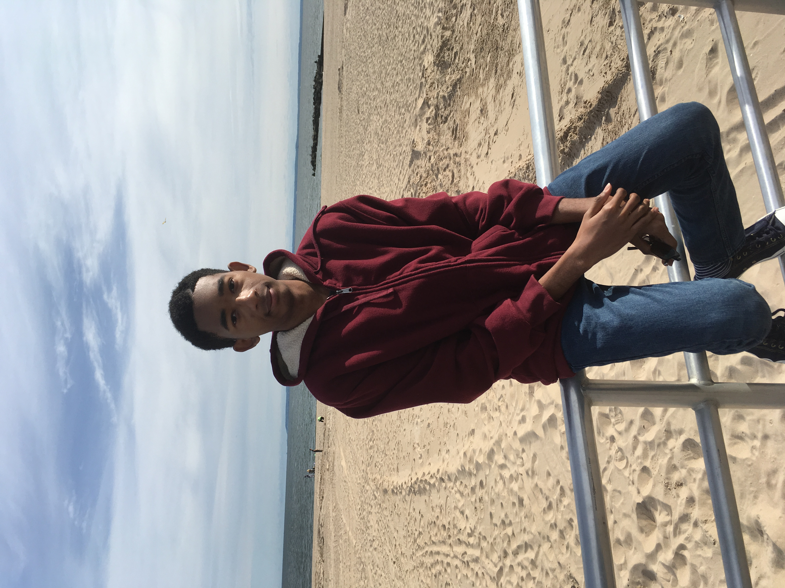

This website hosts projects and data constructed for the course "Introduction to Statistical Modeling". Here are links to the projects I have completed this semester:
And here is the first Rmarkdown file we created to analyze the class restaurant preferences:
More content to come throughout the semester!